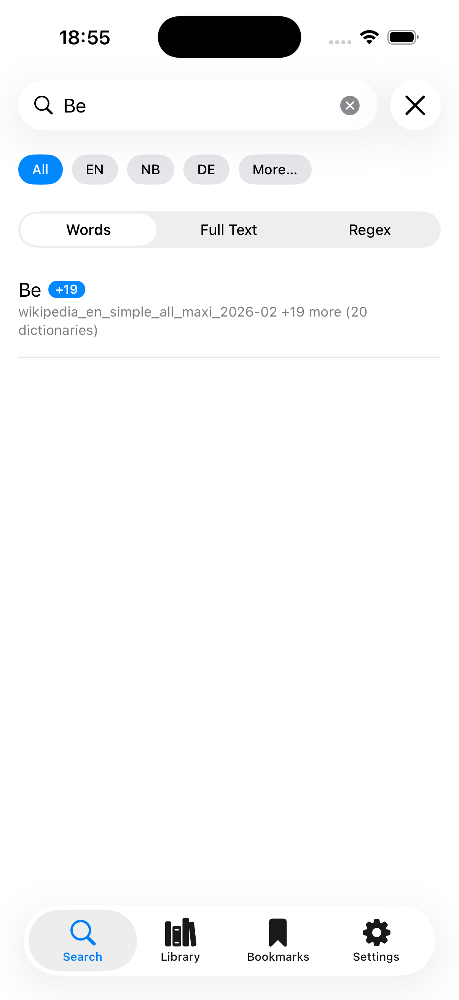
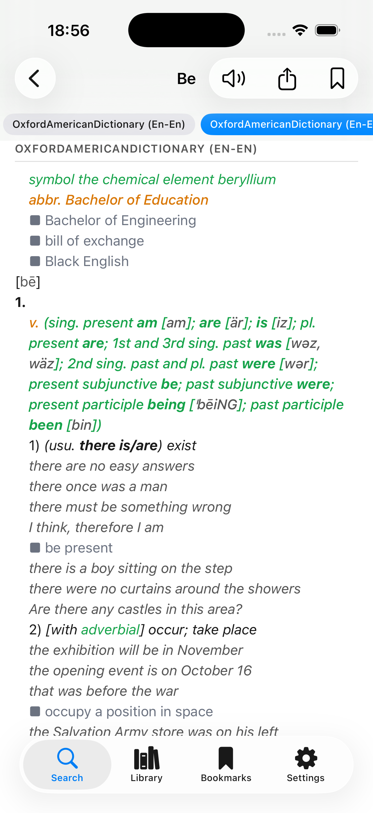
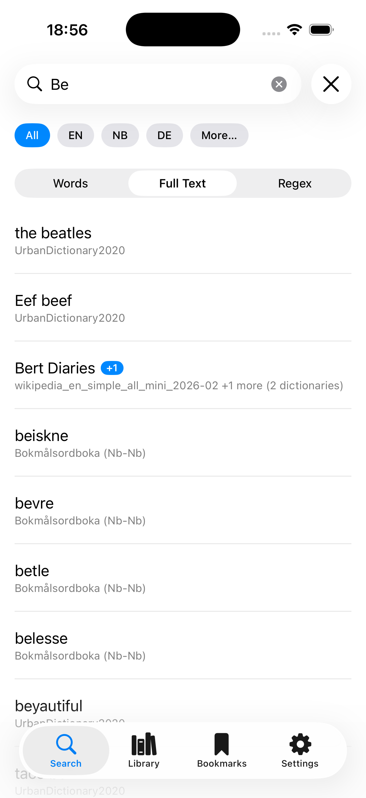
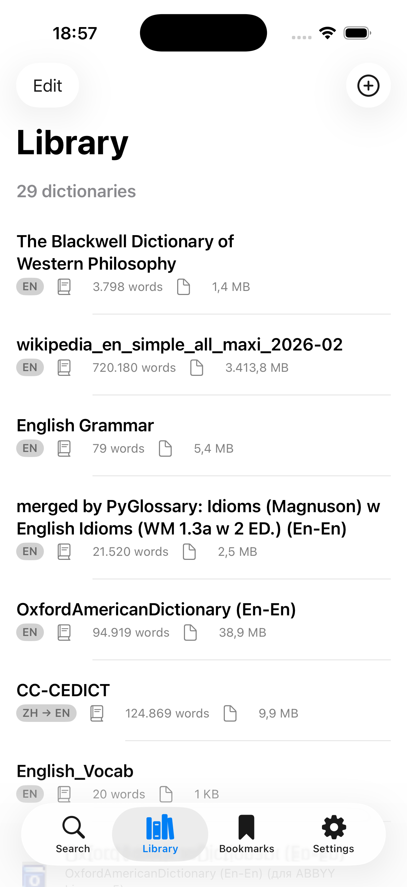
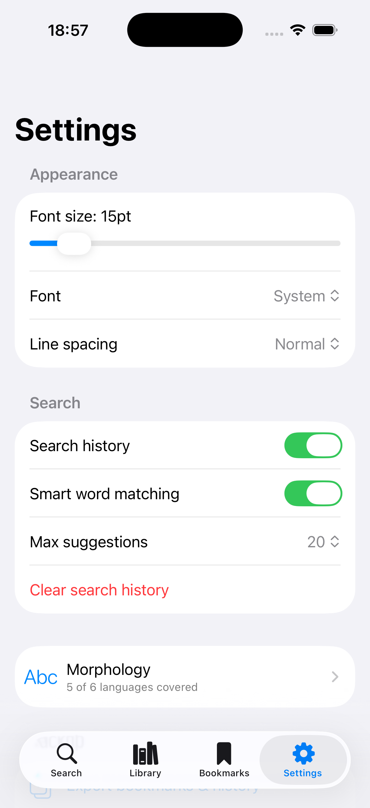
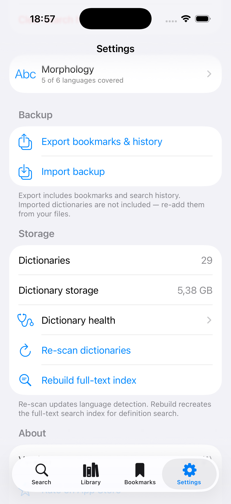
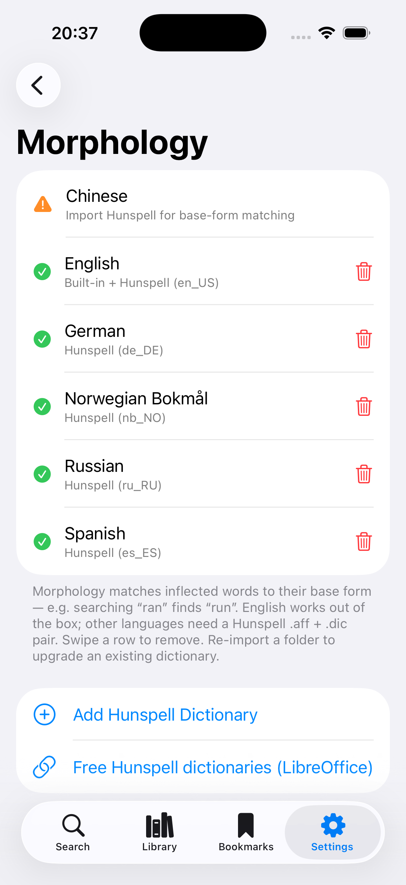
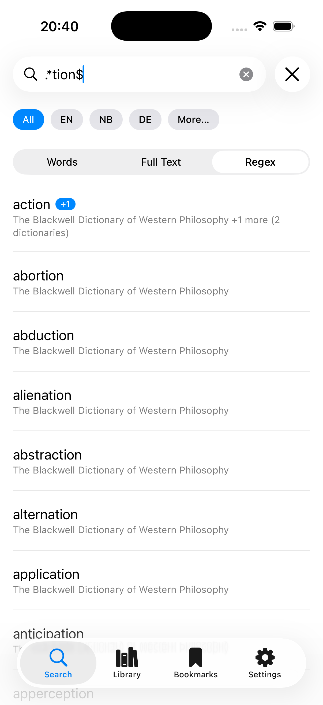

Seven formats, one app
StarDict, DSL, MDict, Babylon, ZIM, CC-CEDICT and CSV — opened natively. No other iOS app reads even the big three together, let alone the rest.
StarDict · DSL · MDict — together at last
The first iPhone & iPad app that opens StarDict, DSL, and MDict dictionaries side by side — with unified search and nothing sent to the cloud.
iOS & iPadOS · in active development
On desktop, GoldenDict unifies every format. On iPhone and iPad, nothing did — so you juggled two or three single-format apps with dated interfaces. Trilexis is the one app that reads them all.
StarDict, DSL, MDict, Babylon, ZIM, CC-CEDICT and CSV — opened natively. No other iOS app reads even the big three together, let alone the rest.
Search every loaded dictionary at once, with instant prefix matching across your whole library.
Full Split View support — look words up while you read, side by side.
Handles dictionary files up to 2 GB with memory-mapped, optimized indexing.
No network requests, no telemetry, no accounts, no ads, no subscriptions — ever.
Pure Swift, purpose-built parsers, no web views for the core experience.
Early builds — running today on iPhone & iPad.








Seven formats, one library — import the files you already have:
.ifo .dict .idx .syn — the most widespread open-source format..mdx .mdd — the largest community-built library, popular across Asia..dsl .dsl.dz — the standard across Russia and Eastern Europe..bgl — classic Babylon glossaries..zim — offline Wikipedia & Kiwix archives..u8 — the open Chinese–English dictionary..csv .tsv — your own word lists.